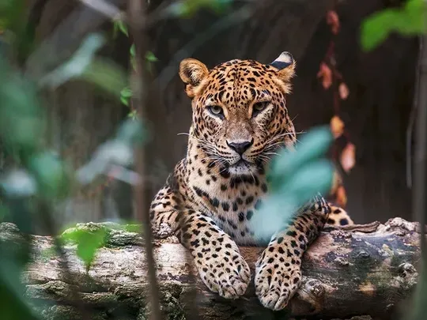

Sinharaja Forest Reserve is a national park in Sri Lanka. It is of international significance and has been designated a Biosphere Reserve and World Heritage Site by UNESCO.
The hilly virgin rainforest, part of the Sri Lanka lowland rain forests ecoregion, was saved from the worst of commercial logging by its inaccessibility and was designated a World Biosphere Reserve in 1978 and a World Heritage Site in 1989. The reserve's name translates as Kingdom of the Lion.
The reserve is only 21 km (13 mi) from east to west, and a maximum of 7 km (4 mi) from north to south, but it is a treasure trove of endemic species, including trees, insects, amphibians, reptiles, birds and mammals.
Because of the dense vegetation, wildlife is not as easily seen as at dry-zone national parks such as Yala. There are no elephants, and the 15 or so leopards are rarely seen. The most common larger mammal is the endemic Purple-faced Langur.
